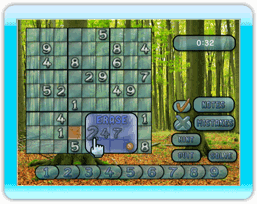

7 |
Option du jeu |
 |

Saisie En sélectionnant cette option vous pourrez glisser-passer jusqu'à quatre chiffres aux coins d'une case individuelle. Beaucoup de joueurs de Sudoku préfèrent cette option s'il existe au moins deux possibilités pour une case.
Si vous souhaitez confirmer le choix du chiffre pour une case à plusieurs chiffres notés, appuyez sur le bouton A pour obtenir le menu de confirmation et sélectionnez le chiffre de votre choix. Notez que vous ne pourrez pas choisir un chiffre incorrect si l'option «erreurs permises» est désactivée.
Pour effacer un chiffre noté dans une case appuyez sur le bouton B au-dessus de cette case pour obtenir le menu d'effacement.
Erreurs permises En désactivant cette option vous ne serez plus capable de placer un chiffre incorrect sur le plateau de jeu. Si vous ne voulez pas de cette limitation, activez l'option «erreurs permises».
Indice Cette option vous révèlera au hasard un chiffre sur le plateau de jeu.
Erreurs Appuyez sur le bouton A et, sans le lâcher, sélectionnez l'option «Erreurs» pour que toutes vos éventuelles erreurs soient soulignées. Cette option est disponible uniquement si l'option «erreurs permises» est désactivée.
Résoudre En choisissant cette option, le reste du casse-tête sera résolu automatiquement.
Quitter Cette option affichera un menu qui vous permettra de recommencer le jeu sous les mêmes options ou de retourner au menu principal. |


 |
 |
 |